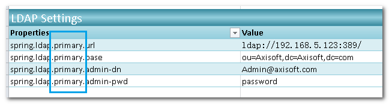

Security Authentication Worksheet
Introduction
This worksheet defines the API authentication configurations. Essentially, where to get login information, how to authenticate the user, how to store the credential, and more.
When this worksheet is setup, an endpoint for login and logout (optionally) will be automatically created. Users will be able to login the API by sending their user name and password to the login service. If user details service is setup, it will look use information such as account state as well.
After authentication passes, the credential information will be stored as session or as a JSON Web Token (JWT).
When an API receives a request to an endpoint, it retrieves the login information so that users do not need to login on every request. If endpoint access control configurations have been defined, it will check whether the current user have access to the requested resource.
This explains how the Security Authentication, User Details Service, and Security Resource work together. The rest of the document specifies the details of each setting on the Security Authentication Worksheet. It contains the following sections:
LDAP Authentication Setting (Apply to LDAP Authentication only)
JWT Token Authentication Common Settings (Apply to JWT Token Authentication only)
Logout Processing Configuration (For Username Password Token Authentication only)
Basic Settings
Configuration Type
Keep it as Rest Security Authentication. Do NOT change this value.
Authentication Type
Authentication type defines what this authentication service will look for in a request to determine who the user is. Two types of authentication are provided:
Username Password Token Authentication - the service will look for a user name and password from the request for authentication.
JWT Token Authentication - the service will look for a JWT token from the request for authentication. The API trusts the user name in a JWT token to be legitimate as the payload in a JWT is signed using a secret.
Authentication Token Validation Type
LDAP Authentication - Select this if Username Password Token Authentication is used (as Authentication type). This means that after the service extracts user name and password from a request, they will be passed to a LDAP server for authentication check. If authentication passes, this user name will become the logged in user name. In the current version of AlchemyJ, this is the only option supported for Username password Token Authentication. Other validation type may be supported in the future. For example, calling a stored procedure, SQL, or a web service to validate a user name / password pair.
Username Token Authentication - Select this if JWT Token Authentication is used (as Authentication type). This means that after the service extracts the JWT token from a request, it will look for the user name property in it as the logged in user name.
In any case, the authenticated user name will be written to REST Security User Name (name: AlchemyJ_REST_Sec_UserName) in %%SysRuntime.
Username password Token Authentication Common Settings
Authentication Processing Url
The endpoint URL that provides the authentication (login) service. Login request should be sent to this URL.
Authentication Processing Request Method
The HTTP method for the authentication service. It supports GET, POST, PUT, PATCH and DELETE. If there is no special preference, use GET or POST.
Authentication Username Getter Type
This defines where user name shall be obtained from the request.
Request Header - Get the username from the request header. The key name is specified in Authentication Username Parameter Key.
Request Parameter - Get the username from request parameters. The parameter name is specified in Authentication Username Parameter Key.
It is not recommended to pass user name and password via URL query string parameter as URL are often logged in access logs of any servers that the request passes through. They may also be saved in browser history.
Authentication Username Parameter Key
The header name or the request parameter name for getting the user name.
For example, if this key is set as "user" and Authentication Username Getter Type is "Request Header", authentication service will try to find the "user" element from the request header and use its value as the user name for authentication.
Authentication Password Getter Type
This defines where password shall be obtained from the request.
Request Header - Get the password from the request header. The key name is specified in Authentication Password Parameter Key.
Request Parameter - Get the password from request parameters. The parameter name is specified in Authentication Password Parameter Key.
Authentication Password Parameter Key
The header name or the request parameter name for getting the password.
Authentication Success Return JSON
Defines the JSON response when authentication passes. It supports the following place holders:
- ${username} - will be replaced by the name of current user.
- ${authorities} will be replaced by the authorities of current user.
For example,
{"message":"Authentication is passed, the user name is ${username}"}
If user submits "Tom" as the user name to the login service, the following JSON will be returned when authentication passes.
{"message":"Authentication is passed, the user name is Tom"}
Authentication Failure Return JSON
Defines the JSON response when authentication fails. It supports the following place holder:
- ${errorMessage}, would be replaced by the authentication error message when authentication failed. Similar to the successful case.
Please note that if Security User Details Service Worksheet is enabled, authentication will also fail if USER_STATE is not 1.
Security Holder Store Type
Defines how authentication information shall be stored.
Session - To store the information in web application server session.
JWT - Generate a JWT token and put user name in the payload. API caller shall get the JWT token and include it in subsequent requests.
LDAP Authentication Setting
This section defines the LDAP connection settings when Authentication Type (in Basic Settings) is “Username Password Token Authentication” and Authentication Token Validation Type is "LDAP Authentication".
Use LDAP Setting Identifier
To select which LDAP resource you would like to use for authentication. The resource should exist in the LDAP Settings section in Controller Worksheet.
For example, to user the primary LDAP setting:

Set "primary" into this field. Note that, identifier must be in lowercase.
LDAP User-Dn Replacement Holder
LDAP expects a distinguish name (DN) when authenticating a user. It includes information such as the domain, organization unit, etc. The login name received by the API, however, may only contain the user id part. This field defines the pattern used to form a DN. It supports the following place holder:
- ${username} - will be replaced by the name of current user.
For example,
${username}@axisoft.com
uid=${username},ou=people
If username is Peter, the first example would become Peter@axisoft.com. The second example would become uid=Peter, ou=people.
JWT Token Authentication Common Settings
This section defines how JWT is processed. It is applicable when Authentication Type is “JWT Token Authentication”.
Authentication Processing Url
This property defines which URL pattern where a JWT token is expected. For example, /** means a JWT token is expected for all resources.
JWT Secret
They key used to generate and decode the JWT.
This API generates JWT for other server to use. Define a key here and share it with other servers.
This API processes JWT that is generated by another authentication service. Obtain the key from the administrator of that service.
This API generates JWT for authentication this API uses. Define your own key here.
In any case, the key shall not be shared with a client (e.g. a user)
The secret key for generating the JWT token.
JWT Expiration
The expiration time of the JWT token. The unit is millisecond.
For example, if you set this as 1800000, that is 1800 seconds. The token will expire in 1800 seconds (30 minutes).
JWT Token Header
This defines the header element that is used for setting (response) and retrieving (request) the JWT. It is commonly set as Authorization.
JWT Refresh Interval
As JWT has an expiration time, if your API uses JWT and it is used in a front-end environment such as ReactJS, user will need to login whenever the JWT has expired. This might not be desirable. JWT Refresh Interval can be used to soften this problem.
JWT Refresh Interval specifies the time interval in milliseconds that a JWT will be regenerated. When it is regenerate, a new token expiry time (current time plus JWT Expiration time) will be set. Doing this can gives an effect of "extending" a login "session" although JWT is stateless.
JWT Refresh Interval should be shorter than JWT Expiration Time. Otherwise, no JWT will be refreshed as they will expiry within the refresh interval.
The below scenario shows how refresh interval and expiration time work together.
Expiration Time: 200000 (20 minutes)
Refresh Interval: 100000 (10 minutes)
At 00:02 - A request arrives. A JWT is generated. Expiration time in JWT is 00:22. Access granted. At 00:08 - A request with JWT (expiry: 00:22) arrives. JWT is still valid. Refresh interval < token life (8 minutes). No JWT regeneration. Access granted. At 00:18 - A request with JWT (expiry: 00:22) arrives. JWT is still valid. Refresh interval > token life (18 minutes). Regenerate a new JWT (expiry: 00:18+20minutes = 00:38). Access granted. At 00:40 - A request with JWT (expiry: 00:38) arrives. Expiry time < Current time. Return JWT expired. Access denied.
This feature only works when the API both generates and use the JWT token. It does not work if it uses JWT tokens generated by other authentication server.
Authentication Failure Return JSON
Defines the JSON response when authentication fails. It supports the following place holder:
- ${errorMessage}, would be replaced by the authentication error message. For example:
{"statusCode": 401, "errorMessage":"${errorMessage}"}
If authentication fails, the following JSON will be returned:
{"statusCode": 401, "errorMessage":"User name or password is incorrect."}
Logout Processing Configuration
Setup this section to enable the logout endpoint and set its configuration.
Enabled Logout Feature
True - Logout endpoint will be available in the API.
False - No logout endpoint in the API.
Please note the logout feature only applies to session (Security Holder Store Type = Session).
Logout Processing Url
The URL of the logout endpoint. It accepts any HTTP requests. Accessing this endpoint will log out the user.
Is invalidate Http Session
True - Information stored in session will be removed after logout.
False - After logout, the API will treat the user as not logged in. However, information stored in user session will still be available until it expires.
Delete Cookies Key List
A list of cookie items that shall be deleted when logging out, separated by comma (,).
Logout Success Return JSON
The JSON response that should be returned after logout. It supports the following place holder:
- ${username}, would be replaced by the user name of current user.
For example,
{"statusCode": 200, "logoutUser":"${username}"}
If the current user name is Tom, the below JSON would be returned after logout successfully.
{"statusCode": 200, "logoutUser":"Tom"}